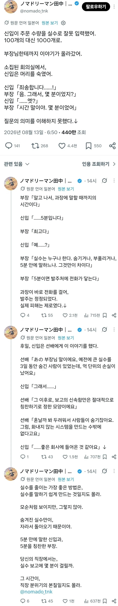

발주를 10배 잘못했지만 상사에게 칭찬받은 일본의 직장인
댓글
그렇게 숨길까봐 빨리말하라고
비슷한 일 겪어봄
옆에서 실시간으로 보고도 못하고 끙끙거리는데
답답해서 한소리했음
실수했으면 책임져줄수있는 사람한테 바로 보고하는거다
100개 주문하던곳이 1000개 주문하면 앵간해선 피드백이 올텐데
실수했을때 바로 보고하면 수습도 쉬움
DB 날려먹고 도망친 사람 생각나네
흐미 어케 됐어
신입들이 생각하는 큰일 = 바로 윗직급 상사 선에서 30분 안에 수습이 가능한 일.
진짜 큰 손해가 날 정도의 큰 일은 일단 신입한테 맡기지를 않지....ㅋㅋㅋ
회사에서 짬이 찬다는건 쉬운일은 쉽게 중요한일은 중요하게 처리하는 완급조절이 가능하다는 말이기도 하니까..
빨리 말해서 수습이라도 된거니 뭐
상사가 강압적이면 부하직원은 실수를 숨김
실수 자체보다
실수를 숨기려고 한 거짓말이 더 큰 문제가 되곤 하지
조회수 끌어서 돈 버는 파딱 소설 계정...저런 계정들 특징이 포멧은 똑같고 배경만 직장 학교 가족 친구 고부관계 다양하게 바꿔가면서 소설 쓰는데 마지막에는 득도한 것 같은 말투로 뭔 좆도없는 교훈이나 삶의 팁 같은 거 씨부리거나 아니면 어떻게 생각하냐고 질문 달아놓고 논쟁 유도함.
그리고 클릭률 높일라고 발단 자극적으로 한다음 눌러서 아래 댓글도 보게 유도함 시~발련들 ㅋㅋ
ㅅㅂ 나도 이거 개같아서 이악물고 안누름
그리고 한번 보게되면 자꾸 추천해주고,
추천해주는거 못버티고 보다보면 알고리즘 오염돼서 계속 참는중
보일 때마다 뮤트나 차단 하는데 전세계적으로 파딱장사하니까 ㅅㅂ 끝도 없음. 저번에는 추천피드에 뭔 인도 파딱이랑 아랍 파딱까지 출몰함.
나는 반대를 경험해봤는데 시발
부장이 잘못 넣어서는
그럼 신입한테 빨리 말해야됨..
신입이 5분안에 어떻게든 해줄거
제..제가 메일 수신자 모가지 따오겠습니다
박현준 발주 실수 처리해
하지만 실수는 3일전에 했고 그걸 알아챈 게 5분전이었네요
내 상사가 나보다 돈을 더 받는 이유는 그런 거 까지 커버쳐야 하기 때문임
애초에 실수 확인하고 커버치라고 있는 사람들인데 뭐
DB날리고 퇴근한 새끼
미리 말만했어도 복구됐는데 ㅅㅂ
사고치면 시간이 지날수록 커진다
제발 사고치면 빨리 얘기하라고 그렇게 얘기했는데..
주말에 밀가루 100kg 10톤으로 발주 넣고 갑자기 퇴직하겠다고 톡 올린 미친년 생각나네
실수로 클라우드 서버에서 rm -rf / 를 입력했어요
윗사람이 보고받고 지랄하기 시작하는 순간부터 조직은 망가짐. 그때부터는 아랫사람이 실책을 숨기려 하거나 보고가 늦어지기 때문에 윗사람이 정상적인 판단을 할 수 있는 환경이 파괴됨.
히틀러만 해도 전쟁 말기에는 이미 전멸한 사단 몇개에다가 명령을 내리고 있었고, 부하들이 거짓말을 쳤다며 소리를 질렀지
5분만에 주문취소가 되지 않았더라면